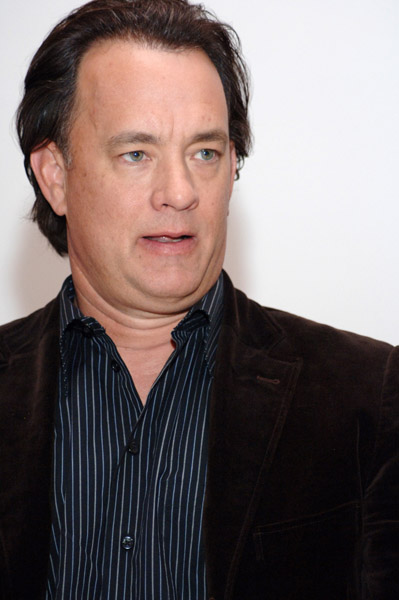

Thomas "Tom" Jeffrey Hanks was born July 9, 1956 in Concord, California to parents Amos Hanks and Janet Frager. Hanks began his acting career in 1979 by in a low-budget slasher film He Knows You're Alone. His first television role was in Bosom Buddies as a young advertiser who desssed as a woman to live in an inexpensive female-only hotel. After a series of unsuccessful films in the mid 1980's, Hanks gained wide notice in 1988's Big. Hanks has acheived success as dramatic actor in a number of notable roles, including Andrew Beckett in Philadelphia, the title role in Forrest Gump, Commander James A. Lovell in Apollo 13, Captain John H. Miller in Saving Private Ryan, Joe Fox in You've Got Mail and Chuck Noland in Cast Away. Hanks won consecutive Best Actor Academy Awards, in 1993 for Philadelphia and in 1994 for Forrest Gump. U.S.
Hanks is ranked the highest all time box office star with over $3.639 billion total box office gross, an average of $101 million per film. He has been involved with seventeen films that grossed over $100 million at the worldwide box office.
Hanks is a strong proponent of environmentalism and is an investor in electric vehicles. He was a lesee of an EV1 and was chronicled in Who Killed the Electric Car. He is also a strong advocate for same sex marriage and was was outspoken about his opposition to California's Proposition 8. He is also a supporter of NASA's manned space program and was inducted as an honorary member in the Army Rangers Hall of Fame for his accurate potrayal of Captain John H. Miller.
Hanks's first marriage was to Samantha Lewes, from 1979 to 1987. The couple had two children, actor Colin Hanks and Elizabeth Ann. Hanks has been married to fellow actor Rita Miller since 1988. Hanks and Miller have two sons, Chester "Chet" and Truman.
Actor Biographies Main Page
Megan Fox
Scarlett Johansson
Sir Sean Connery
© 2010 Jeremy R Perry. All rights reserved.
E mail me: jeremyrperry@gmail.com